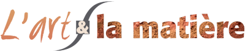

L'Art et la Matière
Le contexte
Cécile Roger est Art-Thérapeute à Sèvres. En 2017, lorsqu'elle m'a contacté, son atelier "L'Art et la Matière" existait déjà depuis 6 ans et proposait deux activités : des ateliers d'expression plastique pour des publics plutôt familiaux et des séances d'Art-Thérapie. Cécile intervenait également dans des établissements de santé mais souhaitait arrêter cette dernière activité pour se concentrer sur son cabinet. J'ai d'abord été contacté par Cécile pour réaliser et imprimer sa plaque professionnelle, ce qui a marqué le début d'une collaboration de 6 ans, avec la réalisation de son site Internet comme point culminant.
Lien vers le site : https://www.lartetlamatiere.org
Objectif(s) principal(aux)
Le site Internet de l'atelier devait répondre à deux critères : présenter ses deux offres de manière claire, humaine et bienveillante, et devenir visuellement un espace où la matière s'exprime, en harmonie avec l'atelier "physique".
Mes contributions au projet
- Nous avons d'abord travaillé sur l'identité visuelle de l'atelier. Après avoir initialement utilisé des couleurs bleues et vertes en lien avec son cursus de doctorante en pharmacie, j'ai suggéré d'adopter une teinte orangée, rehaussée de touches de vert, pour mieux refléter l'ambiance chaleureuse souhaitée pour l'atelier.
- La création du site Internet sur WordPress a été une étape essentielle, car il permettait de poser le discours et de décliner l'identité visuelle. De nombreuses améliorations ont été apportées, auxquelles Cécile n'avait pas pensé, mais qui se sont révélées fructueuses : création d'articles sur les sessions précédentes (sous forme de blog), intégration d'un agenda en ligne, mise en place d'une newsletter et d'un formulaire de contact.
- J'ai optimisé le référencement du site en utilisant des balises et des mots-clés, ainsi qu'en assurant la sécurité grâce à des sauvegardes automatiques et des exceptions dédiées. Une maintenance de WordPress a été mise en place pour tranquilliser Cécile. Il convient de noter que la gestion du serveur était déjà confiée à un prestataire externe.
- En plus de la création du site Internet, j'ai également travaillé sur un benchmark d'une vingtaine de concurrents afin d'étudier leurs offres, leurs discours et leurs méthodes de communication, ce qui a permis de différencier le site de Cécile ; une amélioration de la formulation des contenus notamment en clarifiant l'utilisation de la marque « L’Art et la Matière » ; enfin, le déploiement de l'univers du site sur divers supports, renforçant ainsi la cohérence et l'impact de l’atelier.
Résultats obtenus
- Selon la Search Console, au cours des 12 derniers mois, le site a enregistré 807 clics pour un total de 21,7K impressions. Bien que le référencement ne soit pas exceptionnel en raison d'un manque de backlinks et de liens avec les réseaux sociaux, le site est régulièrement consulté par les participants aux ateliers, notamment les parents et les enfants (cette page étant la plus populaire du site, suivie par celle dédiée à l'Art-Thérapie).
- Cécile a été tellement satisfaite de la nouvelle identité visuelle et du rendu globale du site Internet que nous avons décliné son projet sur des cartes de visite, des dépliants (édition en 2018, puis mise à jour en 2022), des en-têtes pour les invitations par e-mail, des newsletters et différentes campagnes d'affichage.
- Malgré une baisse d'activité en 2020 due au contexte sanitaire, ses ateliers sont bien fréquentés, et elle a pu réduire le rythme de ses communications, en particulier celui des affichages et des newsletters.
- Comme elle le souhaitait, Cécile a pu mettre fin à ses interventions externes pour se concentrer sur son atelier d'expression plastique et son cabinet d'Art-Thérapeute.
Recommandations
"C’est d’abord une création réalisée par Laura qui a attiré mon attention, puis travaillant avec elle, de fil en aiguille nous avons réussi à mettre en image et mots, l’essence même de mon métier et ce qui fait ma singularité. Le premier contact a été très fluide et ouvert pour la réalisation de ma plaque professionnelle : superbe résultat. Et nous voici partis dans l’aventure créative de mon site internet et puis plus encore de mes documents publicitaires. L’Ecoute, la force de proposition, la compréhension de l’environnement et rapidité d’esprit de Laura génèrent un vrai travail d’équipe et des propositions qui correspondent exactement à ce qui fait sens pour votre activité."
Cécile Roger, Art-thérapeute et Docteur en Pharmacie, Fondatrice de l’Art et la Matière